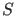
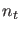
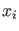
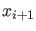
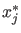
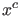
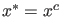
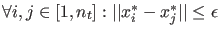
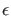
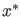

The above is a general way to detect and locate singularities depending on one test function.
However, it may happen that it is not possible to represent a singularity with only one test
function.
Suppose we have a singularity  which depends on  test functions.
Also assume we have found two consecutive points  and  and all
test functions change sign:
Also assume we have found, using a one-dimensional secant method, all zeros 
of the test functions. In the ideal (exact) case all these zeros will
coincide:
Since the continuation is not exact but numerical, we cannot assume this.
However, the locations of probably will be clustered around some center point .
In this case we will glue the points to .
A cluster will be detected if
 for some
small value . In this case we define  as the mean of all located zeroes: